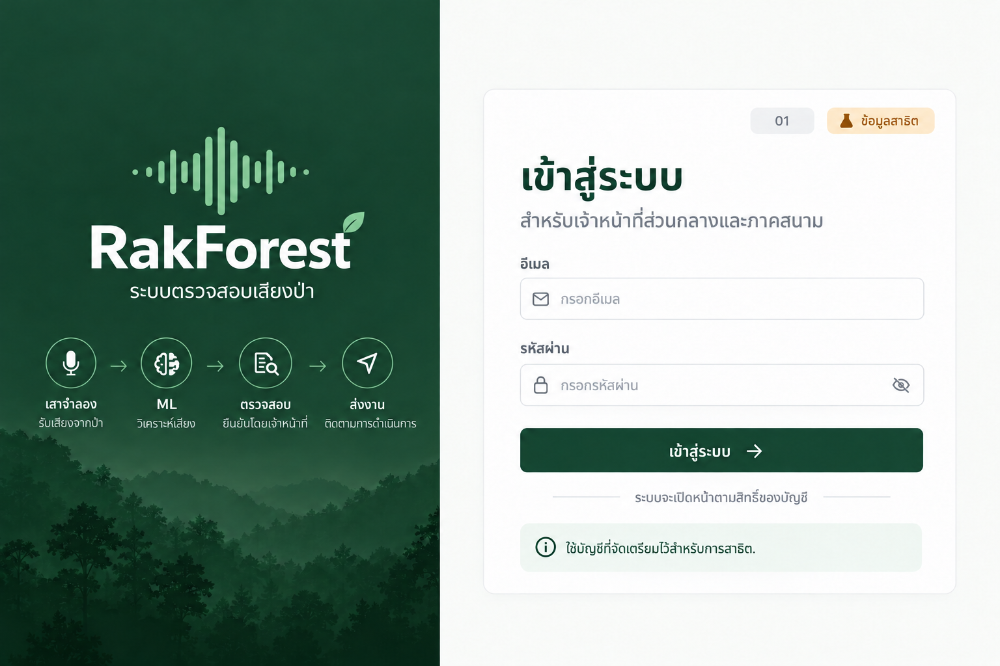
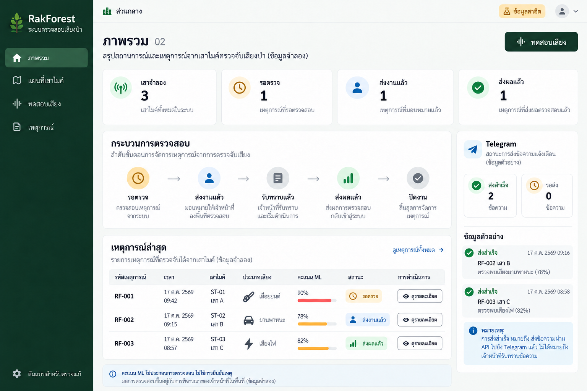
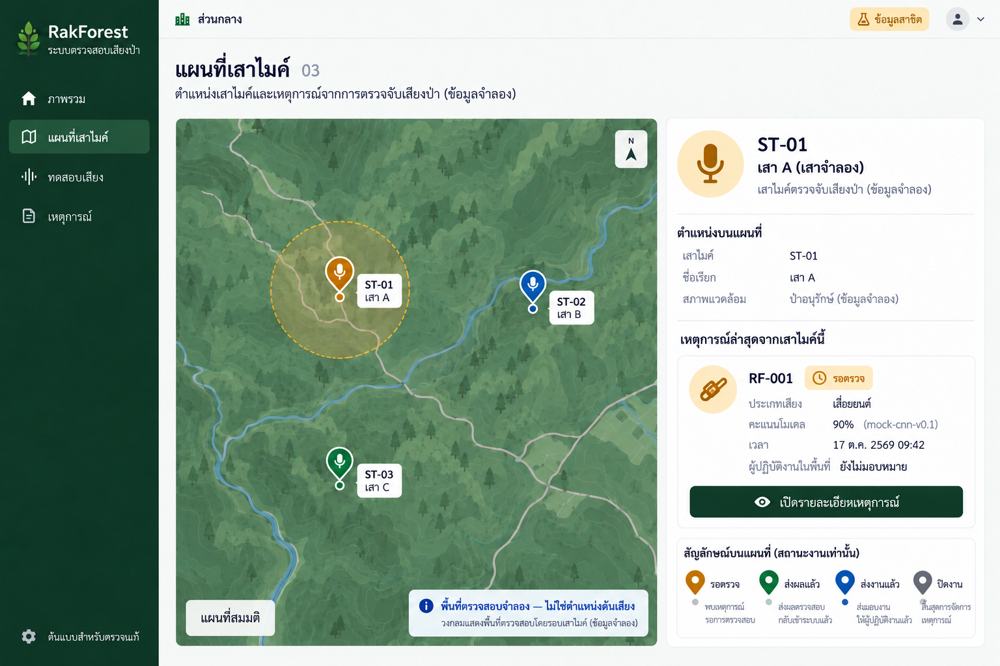
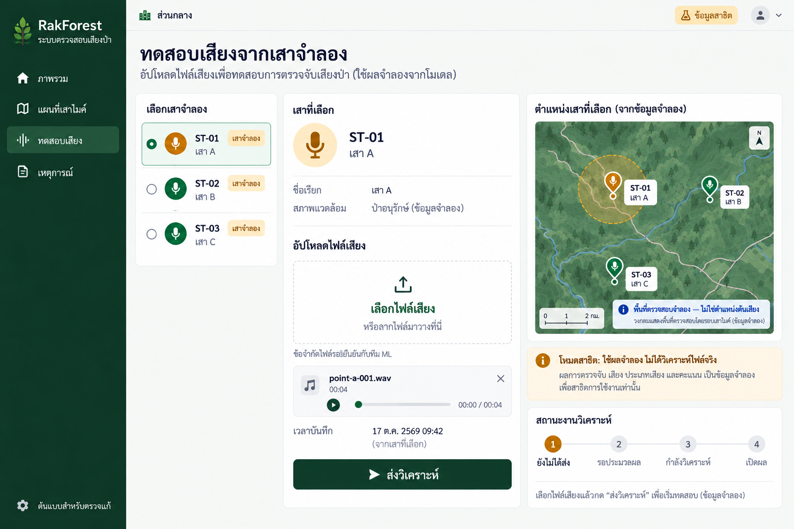
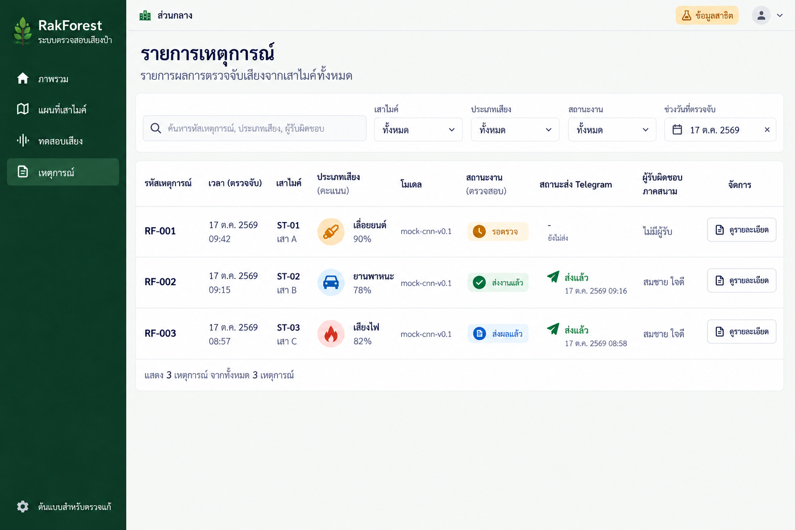
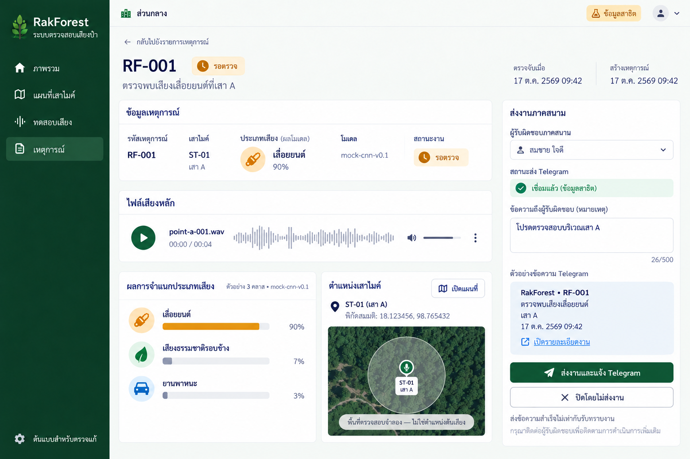
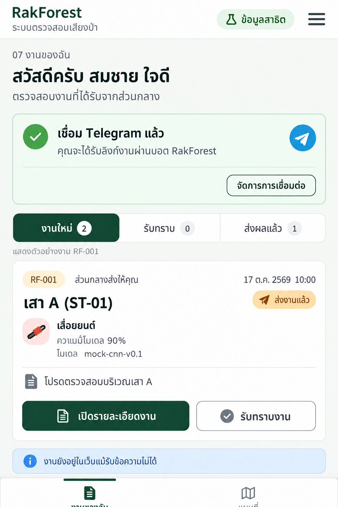
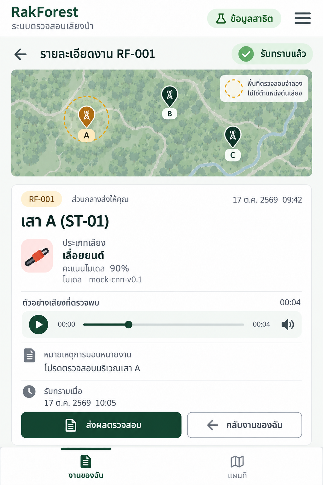
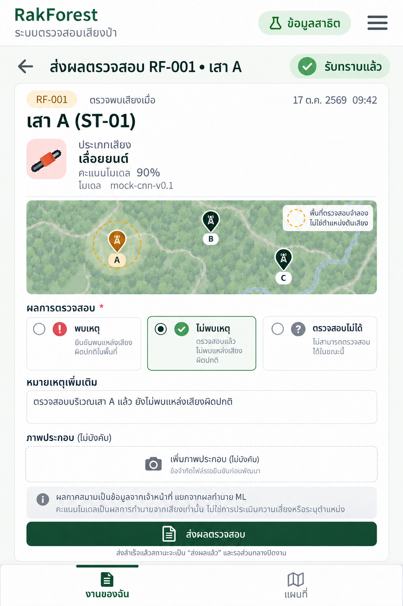

01 เข้าสู่ระบบ
เข้าสู่ระบบแล้วเปิดหน้าตามบทบาท ไม่มีสมัครบัญชีหรือ OTP
ปุ่มและการใช้งาน: เข้าสู่ระบบ → ส่วนกลาง02 / ภาคสนาม07
สถานะเพิ่มเติม: กำลังตรวจบัญชี: ปิดปุ่มซ้ำ; บัญชีผิด/ไม่มีสิทธิ์: ข้อความภาษาไทย ไม่เปิดหน้าข้อมูล
9 หน้าสำหรับตรวจแก้ก่อนพัฒนาเว็บ พร้อมตำแหน่งเสาไมค์จำลองและลำดับรับงาน–ส่งผล

01 เข้าสู่ระบบใช้ร่วมกัน
02 ภาพรวมส่วนกลางส่วนกลาง • Desktop
03 แผนที่เสาไมค์ส่วนกลาง • Desktop
04 เสาและอัปโหลดเสียงทดสอบส่วนกลาง • Desktop
05 รายการเหตุการณ์ส่วนกลาง • Desktop
06 รายละเอียดและส่งงานส่วนกลาง • Desktop
07 งานของฉันภาคสนาม • Mobile
08 รายละเอียดงานและแผนที่ภาคสนาม • Mobile
09 ส่งผลตรวจสอบภาคสนาม • Mobileภาพส่วนกลางแสดง RF-001 ก่อนส่งงาน ส่วนภาพมือถือแสดงหลังส่งเวลา 10:00 และรับทราบเวลา 10:05 จึงมีสถานะต่างกันตามขั้นตอน ภาพแผนที่เป็นภาพประกอบสมมติ ไม่ใช่พิกัดต้นเสียงหรือแผนที่ GIS จริง
เข้าสู่ระบบแล้วเปิดหน้าตามบทบาท ไม่มีสมัครบัญชีหรือ OTP
ปุ่มและการใช้งาน: เข้าสู่ระบบ → ส่วนกลาง02 / ภาคสนาม07
สถานะเพิ่มเติม: กำลังตรวจบัญชี: ปิดปุ่มซ้ำ; บัญชีผิด/ไม่มีสิทธิ์: ข้อความภาษาไทย ไม่เปิดหน้าข้อมูล
ภาพรวมก่อนส่ง RF-001: รอตรวจ1 ส่งงานแล้ว1 ส่งผลแล้ว1 เสาจำลอง3
ปุ่มและการใช้งาน: เลือกเหตุ →06; ทดสอบเสียง→04; เมนูแผนที่→03
สถานะเพิ่มเติม: Loading: skeleton; Empty: ตัวเลข0; Error: ปุ่มลองใหม่ ห้ามใช้ค่าศูนย์แทนข้อมูลที่โหลดล้มเหลว
หมุดเสา A/B/C และวงพื้นที่ตรวจสอบจำลอง RF-001 ยังไม่มอบหมาย
ปุ่มและการใช้งาน: เลือกเสา→แผงรายละเอียด; เปิดเหตุการณ์→06
สถานะเพิ่มเติม: ไม่มีเหตุการณ์: ยังเห็นเสา; แผนที่ล้มเหลว: แสดงรายการเสาและทางไปรายการเหตุการณ์
เลือกเสาแล้วอัปโหลดเสียงแทนฮาร์ดแวร์จริง ใช้ผลจำลองจนกว่าโมเดลพร้อม
ปุ่มและการใช้งาน: ส่งวิเคราะห์→queued→processing→succeeded→06; failed→ลองใหม่
สถานะเพิ่มเติม: ปิดปุ่มส่งระหว่างดำเนินการ; ไฟล์ไม่รองรับให้แจ้งเหตุผล; ไม่แสดงผลจำลองเป็นการวิเคราะห์จริง
RF-001 รอตรวจ / RF-002 ส่งงานแล้ว / RF-003 ส่งผลแล้ว แยกสถานะงานและ Telegram
ปุ่มและการใช้งาน: กรอง/ค้นหา; ดูรายละเอียด→06
สถานะเพิ่มเติม: Loading: skeleton; Empty: ไม่มีรายการหรือไม่ตรงตัวกรอง; Error: ลองใหม่
RF-001 ก่อนมอบหมาย ผู้รับที่เลือกยังไม่ถือว่ารับงาน จนกดส่งและบันทึกสำเร็จ
ปุ่มและการใช้งาน: ส่งงานและแจ้ง Telegram→บันทึกงาน+คิวส่ง; ปิดโดยไม่ส่ง→ต้องมีเหตุผล; เปิดแผนที่→03
สถานะเพิ่มเติม: ส่งไม่สำเร็จ: งานยังอยู่ พร้อมปุ่มลองส่งข้อความใหม่; ไม่เชื่อมบอต: แสดงคำอธิบาย ไม่อ้างส่งถึงแล้ว; เมื่อส่งผลกลับ: แสดงผลและปุ่มปิดงาน
หลังส่ง RF-001 เวลา10:00 ภาคสนามเห็นงานของตน ภาพแสดงตัวอย่างงานเดียวและการเชื่อม Telegram สำเร็จ
ปุ่มและการใช้งาน: เปิดรายละเอียด→08; รับทราบ→สถานะacknowledged; เชื่อม Telegram เมื่อยังไม่เชื่อม→เปิดบอตพร้อมรหัสใช้ครั้งเดียว
สถานะเพิ่มเติม: ยังไม่เชื่อม: ปุ่มเชื่อม Telegram และคำอธิบายกดStart; หมดอายุ: สร้างรหัสใหม่; ไม่มีงาน: ข้อความรอรับงาน
หลังรับทราบ RF-001 เวลา10:05 เห็นตำแหน่งเสา ข้อความส่วนกลาง และเสียง
ปุ่มและการใช้งาน: ส่งผลตรวจสอบ→09; กลับงาน→07; แท็บแผนที่แสดงเฉพาะงานที่มีสิทธิ์
สถานะเพิ่มเติม: ไม่พบงาน/ไม่มีสิทธิ์: ไม่เปิดข้อมูล; เสียงโหลดไม่ได้: ลองใหม่โดยยังอ่านรายละเอียดได้
ฟอร์มก่อนส่งผล RF-001 เลือกไม่พบเหตุ ตัวเลือกอื่นคือพบเหตุและตรวจสอบไม่ได้ ภาพประกอบไม่บังคับ
ปุ่มและการใช้งาน: ส่งผล→submitted; ส่วนกลางเปิด06ตรวจผลและปิดงาน→closed
สถานะเพิ่มเติม: ต้องเลือกผล; ส่งอยู่ปิดปุ่มซ้ำ; ล้มเหลวเก็บข้อความ/ไฟล์ไว้ในหน้าปัจจุบัน ไม่อ้างว่าส่งแล้ว ไม่รับประกันเก็บหลังปิดเว็บ
รอบนี้ยังไม่ได้สร้างบอตหรือส่งข้อความจริง ชุดภาพสร้างด้วย built-in imagegen
อ่านข้อตกลงข้อมูลและเกณฑ์ทดสอบ · ชุด Prompt สำหรับแก้ภาพต่อ
เสนอแก้ได้ด้วยหมายเลขหน้า เช่น “หน้า 03 อยากให้แผนที่ใหญ่ขึ้น” หรือ “หน้า 07 ลดข้อความและขยายปุ่มรับทราบ”